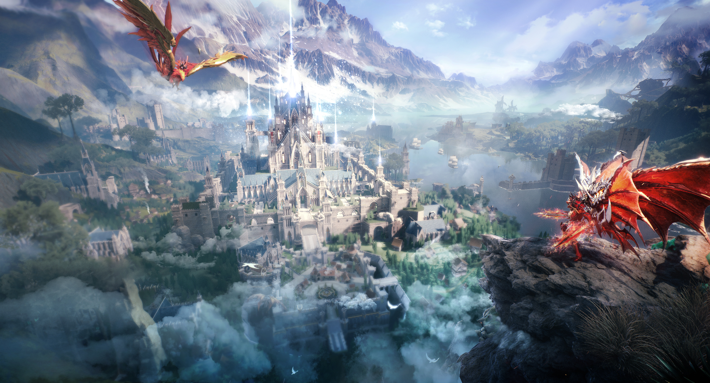

MuOnline
Creado en diciembre de 2001 por la compañía de juegos coreana Webzen Inc. Como la mayoría de los MMORPG, los jugadores crean un personaje entre clases diferentes y para ganar experiencia y así subir de nivel, un jugador necesita luchar contra monstruos (mobs). MU está poblado por una gran variedad de monstruos, desde los simples como goblins y golems , hasta los más desafiantes como la Gorgona , Kundun o Selupan. Cada tipo de monstruo es único, tiene diferentes puntos de aparición y suelta diferentes elementos.
Hechizos
Como en la mayoría de los juegos MMO , los personajes de MU pueden usar muchos tipos diferentes de magia y habilidades especiales. Cada personaje tiene su propio conjunto de hechizos y algunas armas pueden estar encantadas para proporcionar al personaje un hechizo específico.
Comunicaciones
Mu Online tiene un sistema de chat integrado que permite a todos los jugadores visibles comunicarse fácilmente a través de mensajes de texto. Los usuarios pueden agregar jugadores personalizados a su lista de amigos para que les resulte más fácil mantenerse en contacto entre ellos. También hay otros métodos de chat disponibles, como el chat de gremio y el chat de grupo.
